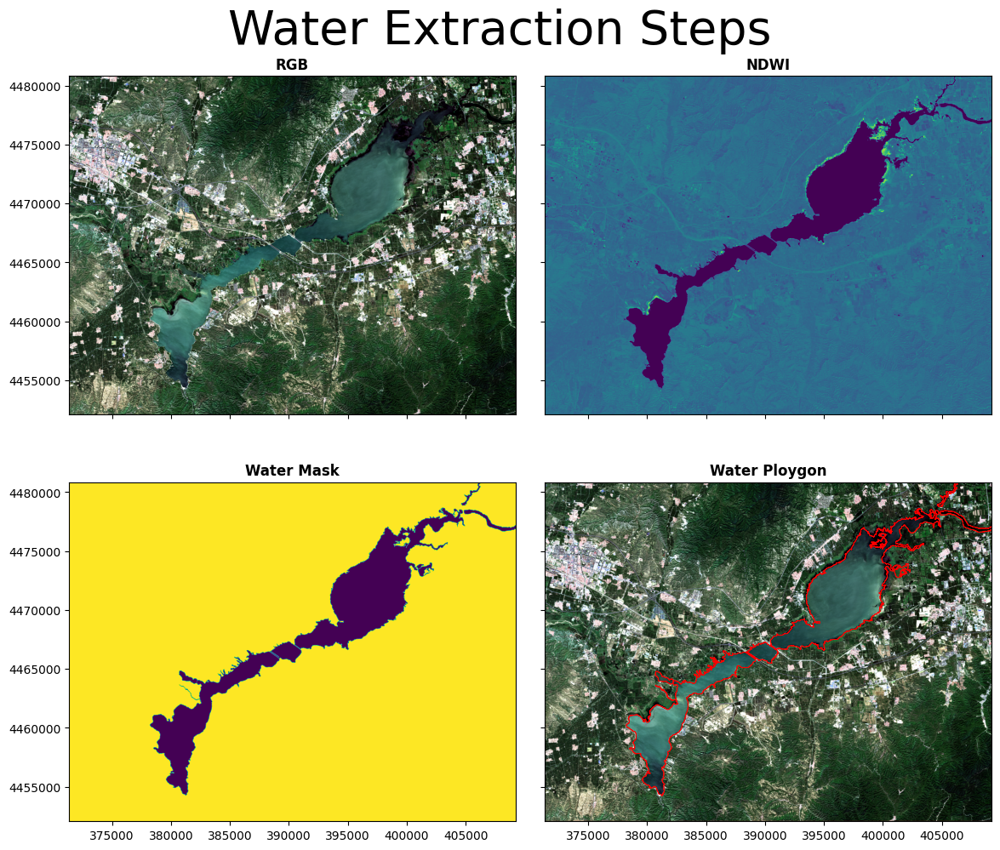

import matplotlib.pyplot as plt
from PIL import Image
import numpy as np
from osgeo import gdal, osr, ogr, gdalconst
import os,glob,time,rasterio
import shutil
import rasterio.plot
import geopandas as gpd基于遥感指数提取水体
阈值法是比较简单但却较为有效地水体提取方法，且多数地复杂方法地基础仍然是阈值法。目前，较为常用的阈值提取方法主要为NDWI、MNDWI以及部分针对特殊影像的阈值提取方法。此类方法是利用水体在部分波段中反射率较高，而在一些波段中反射率低的特点，通过波段之间的计算来凸显水体，并且通过设定阈值，从而达到提取水体的目的。
NDWI（归一化差异水体指数）:
- NDWI = (GREEN-NIR)/(GREEN+NIR)
式中GREEN表示绿光波段的反射率，NIR表示近红外波段的反射率。该方法尽管已经较为古老，但其是最为常用的水体提取方法（部分高分辨率数据仅有4个波段），并且目前很多的水体指数法都是在该方法地基础上进行地变化。该方法对于大部分的常规水体均可有效提取，但是同样受到其他因素的影响较大。
NDWI（改进的归一化差异水体指数）：
- MNDWI=(GREEN-SWIR)/(GREEN+SWIR)
式中GREEN表示绿光波段的反射率，SWIR表示中红外波段的反射率。该方法是NDWI的变种，但是总体提取精度要优于NDWI。但是对于部分高分辨率数据不适用（不存在中红外波段），因此在进行中低分辨率的水体自动提取时常用。且由于该方法对于部分湖泊湿地中的富营养化的水体提取也较为适用，因此也常用来提取此类水体。
环境要求：
- GDAL==2.4.1
- numpy==1.19.5
- PyCRS==1.0.2
- scikit-image==0.17.2
## 读图像文件
def read_img(filename):
dataset = gdal.Open(filename) # 打开文件
im_width = dataset.RasterXSize # 栅格矩阵的列数
im_height = dataset.RasterYSize # 栅格矩阵的行数
# im_bands = dataset.RasterCount # 波段数
im_geotrans = dataset.GetGeoTransform() # 仿射矩阵，左上角像素的大地坐标和像素分辨率
im_proj = dataset.GetProjection() # 地图投影信息，字符串表示
im_data = dataset.ReadAsArray(0, 0, im_width, im_height)
del dataset #关闭对象dataset，释放内存
# return im_width, im_height, im_proj, im_geotrans, im_data,im_bands
return im_proj, im_geotrans, im_data, im_width,im_height
## 将numpy形式的遥感影像写出为GeoTiff文件
def Write_Tiff(img_arr, geomatrix, projection,path):
# img_bands, img_height, img_width = img_arr.shape
if 'int8' in img_arr.dtype.name:
datatype = gdal.GDT_Byte
elif 'int16' in img_arr.dtype.name:
datatype = gdal.GDT_UInt16
else:
datatype = gdal.GDT_Float32
if len(img_arr.shape) == 3:
img_bands, img_height, img_width = img_arr.shape
driver = gdal.GetDriverByName("GTiff")
dataset = driver.Create(path, int(img_width), int(img_height), int(img_bands), datatype)
# print(path, int(img_width), int(img_height), int(img_bands), datatype)
if(dataset!= None) and (geomatrix !='') and (projection!=''):
dataset.SetGeoTransform(geomatrix) #写入仿射变换参数
dataset.SetProjection(projection) #写入投影
for i in range(img_bands):
dataset.GetRasterBand(i+1).WriteArray(img_arr[i])
del dataset
elif len(img_arr.shape) == 2:
# img_arr = np.array([img_arr])
img_height, img_width = img_arr.shape
img_bands=1
#创建文件
driver = gdal.GetDriverByName("GTiff")
dataset = driver.Create(path, int(img_width), int(img_height), int(img_bands), datatype)
# print(path, int(img_width), int(img_height), int(img_bands), datatype)
if(dataset!= None):
dataset.SetGeoTransform(geomatrix) #写入仿射变换参数
dataset.SetProjection(projection) #写入投影
dataset.GetRasterBand(1).WriteArray(img_arr)
del dataset
## 计算数据头尾分位数的方式进行归一化，剔除异常值
def stretch(band, lower_percent=2, higher_percent=98): #2和98表示分位数
band=np.array(band,dtype=np.float32)
c = np.percentile(band, lower_percent)*1.0
d = np.percentile(band, higher_percent)*1.0
band[band<c] = c
band[band>d] = d
out = (band - c) / (d - c)
return out.astype(np.float32)
def stretch_n(data, n_band=3): #该操作讲改变原始数据，因此data用.copy，不对原始数据进行更改
data=np.array(data,dtype=np.float32)
for k in range(n_band):
data[:,:,k] = stretch(data[:,:,k])
return data
def rgb(img_data,iftran=True):
img_data_3b = img_data[:3,:,:] # 取前三个波段 B02,B03,B04
if iftran:
img_data_3b = img_data_3b[::-1,:,:] # 将B02,B03,B04转成B04,B03,B02 (BGR转RGB)
img_data = img_data_3b.transpose(1,2,0) # C,H,W -> H,W,C
return img_data 读取多波段影像，剔除异常值，并提取rgb信息进行可视化
new_stack = "./data/T50TLK_20220825T030519/T50TLK_20220825T030519_clip.tif"
out_path='./data/T50TLK_20220825T030519/'
proj, geotrans, img_data, row, column = read_img(new_stack)
# 显示重投影结果信息
print(f'仿射矩阵信息：{geotrans}',f'投影信息：{proj}',f'图像大小：{img_data.shape}')
img_data_=rgb(img_data)
plt.imshow(stretch_n(img_data_.copy()))仿射矩阵信息：(371350.0, 10.0, 0.0, 4480810.0, 0.0, -10.0) 投影信息：PROJCS["WGS 84 / UTM zone 50N",GEOGCS["WGS 84",DATUM["WGS_1984",SPHEROID["WGS 84",6378137,298.257223563,AUTHORITY["EPSG","7030"]],AUTHORITY["EPSG","6326"]],PRIMEM["Greenwich",0,AUTHORITY["EPSG","8901"]],UNIT["degree",0.0174532925199433,AUTHORITY["EPSG","9122"]],AUTHORITY["EPSG","4326"]],PROJECTION["Transverse_Mercator"],PARAMETER["latitude_of_origin",0],PARAMETER["central_meridian",117],PARAMETER["scale_factor",0.9996],PARAMETER["false_easting",500000],PARAMETER["false_northing",0],UNIT["metre",1,AUTHORITY["EPSG","9001"]],AXIS["Easting",EAST],AXIS["Northing",NORTH],AUTHORITY["EPSG","32650"]] 图像大小：(7, 2874, 3789)<matplotlib.image.AxesImage at 0x246c2062c40>水体指数计算
- NDWI（归一化差异水体指数）：NDWI = (GREEN-NIR)/(GREEN+NIR)
- MNDWI（改进的归一化差异水体指数）：MNDWI=(GREEN-SWIR)/(GREEN+SWIR)
- 通过直方图观察数值分布情况，初步定位阈值区间
Green_arr = img_data[1,:,:]
NIR_arr = img_data[3,:,:]
denominator = np.array(Green_arr + NIR_arr, dtype=np.float32)
numerator = np.array(Green_arr - NIR_arr, dtype=np.float32)
nodata = np.full((Green_arr.shape[0], Green_arr.shape[1]), -2, dtype=np.float32)
ndwi = np.true_divide(numerator, denominator, out=nodata, where=denominator != 0.0)
print(np.min(ndwi),np.max(ndwi))
ndwi[ndwi == -2.0]=None
ndwipath=out_path+'ndwi.tif'
Write_Tiff(np.uint8(ndwi), geotrans,proj, ndwipath)
fig, axes = plt.subplots(1,3,figsize=(20,5))
plt.subplot(1,3,1),plt.title('RGB'), plt.axis('off')
plt.imshow(stretch_n(img_data_.copy()))
plt.subplot(1,3,2),plt.title('NDWI'), plt.axis('off')
plt.imshow(ndwi)
# plt.style.use("ggplot")
plt.subplot(1,3,3),plt.title('Histogram'), plt.axis('off')
plt.hist(ndwi.ravel(), bins=100, density=None, facecolor='green', alpha=0.75)
plt.show()0.0 30.031637通过可视化查看不同阈值条件下水体提取效果
fig = plt.figure(figsize=(20,6))
for i in range(5):
ndwi_ = ndwi.copy()
threshold = (i+1) *0.05
plt.subplot(1,5,i+1),plt.title('threshold= %.3f' % threshold), plt.axis('off')
ndwi_ [ndwi_ >threshold] = 255
ndwi_ [ndwi_ <=threshold] = 0
plt.imshow(Image.fromarray(np.uint8(ndwi_)))
plt.show()
fig = plt.figure(figsize=(20,6))
for i in range(5):
ndwi_ = ndwi.copy()
threshold = (i+1) *2.5
plt.subplot(1,5,i+1),plt.title('threshold= %.3f' % threshold), plt.axis('off')
ndwi_ [ndwi_ >threshold] = 255
ndwi_ [ndwi_ <=threshold] = 0
plt.imshow(Image.fromarray(np.uint8(ndwi_)))
plt.show()
对比NDWI和mNDWI的效果
Green_arr = img_data[1,:,:]
SWIR_arr = img_data[5,:,:]
denominator = np.array(Green_arr + SWIR_arr, dtype=np.float32)
numerator = np.array(Green_arr - SWIR_arr, dtype=np.float32)
nodata = np.full((Green_arr.shape[0], Green_arr.shape[1]), -2, dtype=np.float32)
mndwi = np.true_divide(numerator, denominator, out=nodata, where=denominator != 0.0)
mndwi[mndwi == -2.0]=None
fig, axes = plt.subplots(1,3,figsize=(20,5))
plt.subplot(1,3,1),plt.title('RGB'), plt.axis('off')
plt.imshow(stretch_n(img_data_.copy()))
plt.subplot(1,3,2),plt.title('NDWI'), plt.axis('off')
plt.imshow(ndwi)
plt.subplot(1,3,3),plt.title('mNDWI'), plt.axis('off')
plt.imshow(Image.fromarray(np.uint8(mndwi)))
plt.show()fig = plt.figure(figsize=(20,6))
for i in range(5):
ndwi_ = mndwi.copy()
threshold = (i+1) *0.05
plt.subplot(1,5,i+1),plt.title('threshold= %.3f' % threshold), plt.axis('off')
ndwi_ [ndwi_ >threshold] = 255
ndwi_ [ndwi_ <=threshold] = 0
plt.imshow(Image.fromarray(np.uint8(ndwi_)))
plt.show()
fig = plt.figure(figsize=(20,6))
for i in range(5):
ndwi_ = mndwi.copy()
threshold = (i+1) *2.5
plt.subplot(1,5,i+1),plt.title('threshold= %.3f' % threshold), plt.axis('off')
ndwi_ [ndwi_ >threshold] = 255
ndwi_ [ndwi_ <=threshold] = 0
plt.imshow(Image.fromarray(np.uint8(ndwi_)))
plt.show()阈值分割进行二值化处理得到水体掩膜
ndwi_ = ndwi.copy()
threshold = 2.5
ndwi_ [ndwi_ >threshold] = 255
ndwi_ [ndwi_ <=threshold] = 0
plt.imshow(Image.fromarray(np.uint8(ndwi_)),cmap='gray')
out_ndwi=out_path+'out_ndwi.tif'
Write_Tiff(np.uint8(ndwi_), geotrans,proj, out_ndwi)
去除小图斑
- 使用阈值分割法会使图像上布满不规则小图斑，影响分割精度
- 利用滤波等候处理方法降低结果噪声
def Speckle_removal(tif_path, save_path, remove_pixels =100, neighbours = 8 ):
filename = os.path.basename(tif_path)
output_path = os.path.join(save_path, filename[:-4] + '_sr.tif' )
if not os.path.exists(save_path):
os.makedirs(save_path)
shutil.copy(tif_path, output_path)
# remove_pixels =100 #碎斑像素
# neighbours = 8 #连通域， 4或8
Image = gdal.Open(output_path, 1) # open image in read-write mode
Band = Image.GetRasterBand(1)
gdal.SieveFilter(srcBand=Band, maskBand=None, dstBand=Band,
threshold= remove_pixels,
connectedness= neighbours,
callback=gdal.TermProgress_nocb)
del Image, Band # close the datasets.
return output_pathsr_out = Speckle_removal(out_ndwi, out_path, remove_pixels =1000, neighbours = 8 )
proj, geotrans, sr_arr, row, column = read_img(sr_out)
sr_arr.shape(2874, 3789)对比后处理前后变化
proj, geotrans, sr_arr, row, column = read_img(sr_out)
fig, axes = plt.subplots(1,2,figsize=(20,5))
plt.subplot(1,3,1),plt.title('NDWI'), plt.axis('off')
plt.imshow(Image.fromarray(np.uint8(ndwi_)))
plt.subplot(1,3,2),plt.title('NDWI_sr'), plt.axis('off')
plt.imshow(sr_arr)
plt.show()C:\Users\Administrator\AppData\Local\Temp\ipykernel_28856\1761671902.py:3: MatplotlibDeprecationWarning: Auto-removal of overlapping axes is deprecated since 3.6 and will be removed two minor releases later; explicitly call ax.remove() as needed.
plt.subplot(1,3,1),plt.title('NDWI'), plt.axis('off')
C:\Users\Administrator\AppData\Local\Temp\ipykernel_28856\1761671902.py:5: MatplotlibDeprecationWarning: Auto-removal of overlapping axes is deprecated since 3.6 and will be removed two minor releases later; explicitly call ax.remove() as needed.
plt.subplot(1,3,2),plt.title('NDWI_sr'), plt.axis('off')二值化栅格转矢量输出
def tif_to_shp(tif_path, shp_save_path):
inraster = gdal.Open(tif_path) # 读取路径中的栅格数据
inband = inraster.GetRasterBand(1) # 这个波段就是最后想要转为矢量的波段，如果是单波段数据的话那就都是1
prj = osr.SpatialReference()
prj.ImportFromWkt(inraster.GetProjection()) # 读取栅格数据的投影信息，用来为后面生成的矢量做准备
outshp = shp_save_path + os.path.basename(tif_path)[:-4] + '.shp' # 给后面生成的矢量准备一个输出文件名，这里就是把原栅格的文件名后缀名改成shp了
drv = ogr.GetDriverByName("ESRI Shapefile")
if os.path.exists(outshp): # 若文件已经存在，则删除它继续重新做一遍
drv.DeleteDataSource(outshp)
Polygon = drv.CreateDataSource(outshp) # 创建一个目标文件
Poly_layer = Polygon.CreateLayer(os.path.basename(tif_path)[:-4], srs=prj, geom_type=ogr.wkbMultiPolygon) # 对shp文件创建一个图层，定义为多个面类
newField = ogr.FieldDefn('value', ogr.OFTReal) # 给目标shp文件添加一个字段，用来存储原始栅格的pixel value,浮点型，
Poly_layer.CreateField(newField)
gdal.Polygonize(inband, None, Poly_layer, 0) # 核心函数，执行的就是栅格转矢量操作
Polygon.SyncToDisk()
Polygon = None
return outshp# 执行转换函数，获取存储路径
ndwi_shp = tif_to_shp(sr_out,out_path)成果出图
- 利用rasterio更容易实现将shape文件与栅格影像进行叠加显示
- plt.imshow更适合临时出图，更专业的出版需求通常采用axs这种方式实现
fig, axs = plt.subplots(2, 2, figsize=(12,10))
vector = gpd.read_file(ndwi_shp)
img=rasterio.open(out_path+"T50TLK_20220825T030519_quickclip.tif")
ndwiimg=rasterio.open(ndwipath)
srimg=rasterio.open(sr_out)
p1 =rasterio.plot.show(img, ax=axs[0,0],title='RGB')
ndwi =rasterio.plot.show(ndwiimg, ax=axs[0,1],title='NDWI')
sr =rasterio.plot.show(srimg, ax=axs[1,0],title='Water Mask')
p1 =rasterio.plot.show(img, ax=axs[1,1],title='Water Ploygon')
vector.plot(ax=axs[1,1],edgecolor='red', linewidth=0.5,facecolor='none')
fig.suptitle('Water Extraction Steps', fontsize=40)
for ax in fig.get_axes():
ax.label_outer()
ax.ticklabel_format(style ='plain')
fig.tight_layout()
plt.subplots_adjust(left=None, bottom=None, right=None, top=0.9, wspace=None, hspace=0.2)
fig.savefig(out_path+"T50TLK_20220825T030519_result.png",facecolor='white')